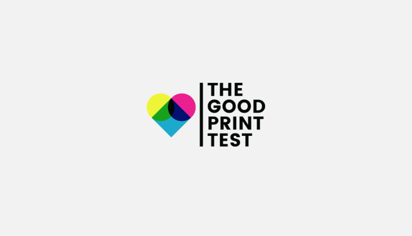

Selected work
Three years writing for Freepik → Magnific. Rebranding, the switch to B2B, Originals and AI launches.

An app with a unique personality that helps users keep their gallery in order. Crafted from 0.

The first 3-shoe pack for skaters: two of the dominant foot, one of the other. Double shortlist at Cannes Lions.

The most viral Black Friday campaign, which increased Worten's sales by 23%. Gold at the Inspirational Awards.

We turned printer test pages into ready-to-send organ donor applications, together with the National Transplant Organisation. Shortlisted at Cannes Lions and El Sol.

The uncomfortable "boxing" before every YouTube "unboxing" video. World Vision. Triple Gold at El Chupete.

The country's best illustrators "donated" their hearts to help us look after our own. A 360º campaign, exhibition included, for the Spanish Heart Foundation.

Repositioning San Miguel Magna for the most contradictory generation: Gen Z. A campaign disloyal to what campaigns usually are, for a beer that is disloyal to itself.